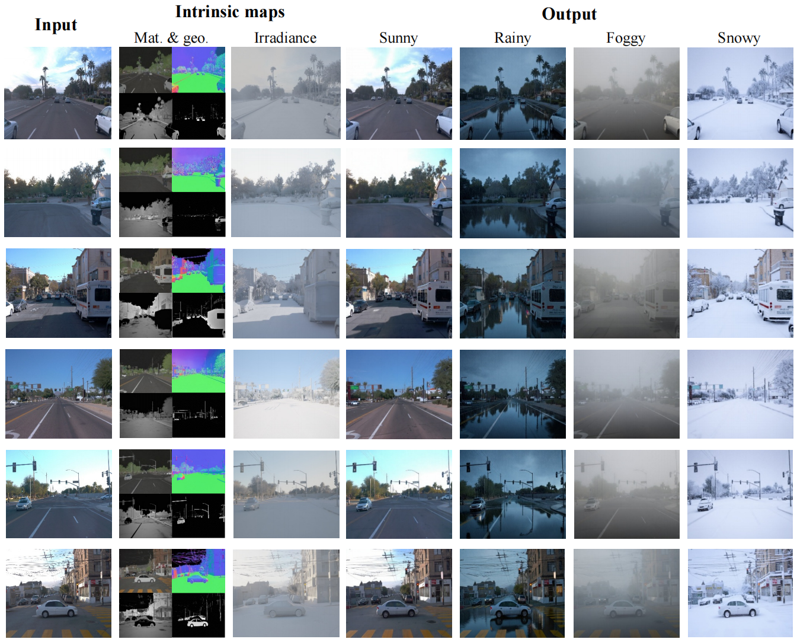
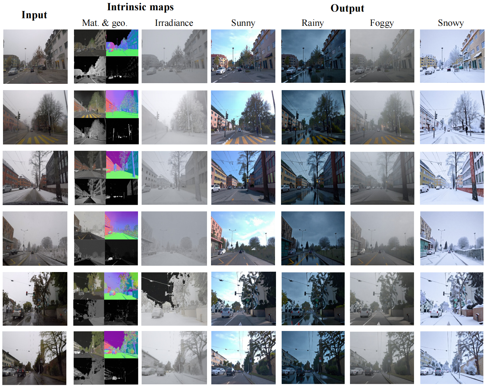
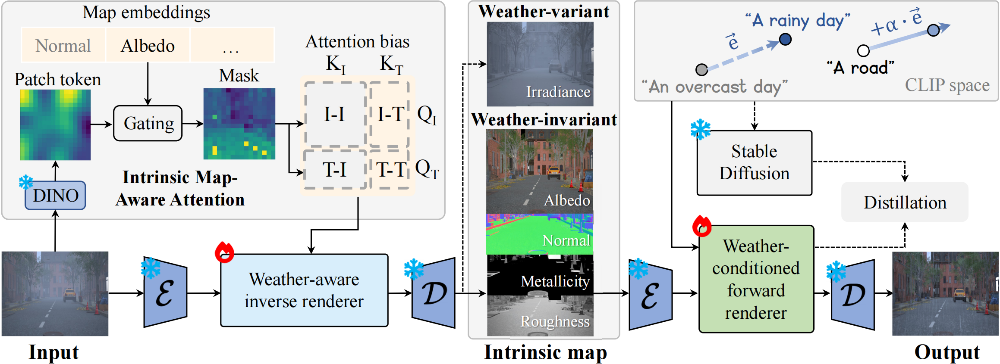
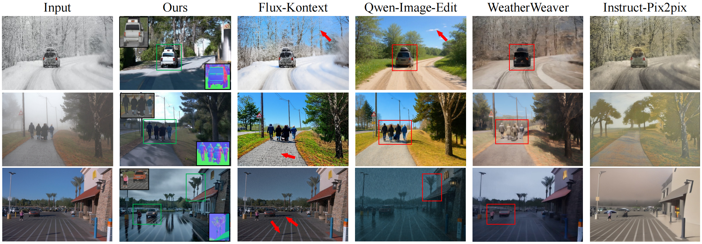
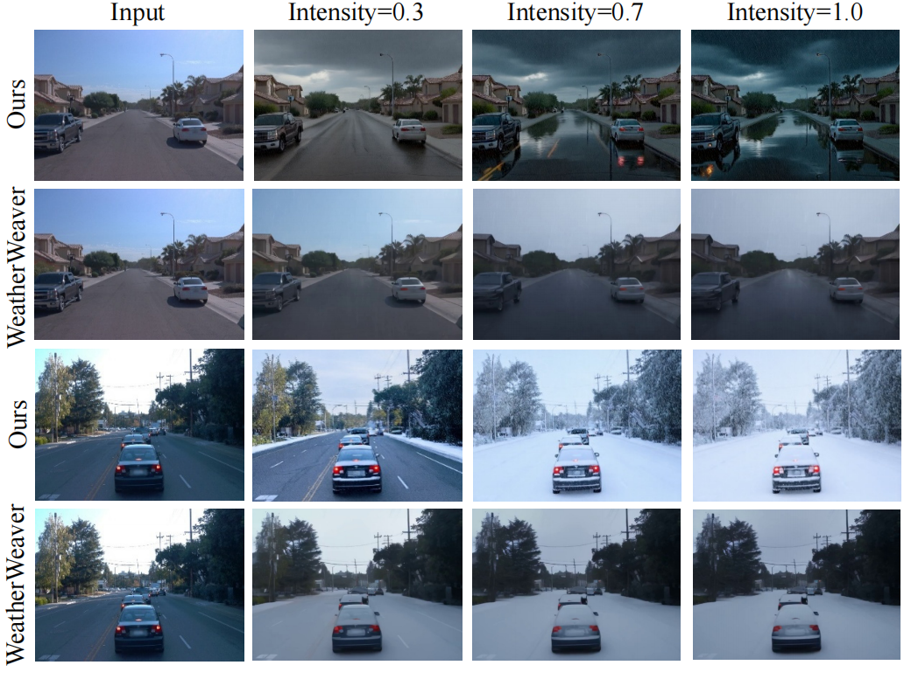
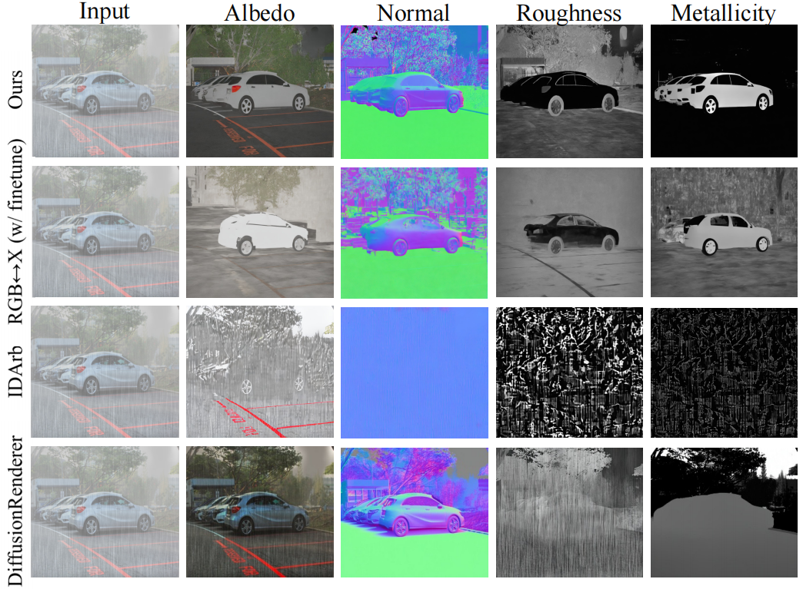
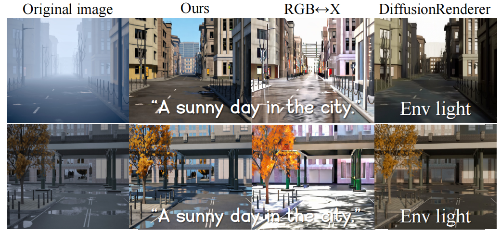

Early Morning
Image
Irradiance
CVPR 2026


We present WeatherDiffusion, a diffusion-based framework for controllable weather editing in intrinsic space.
Our framework includes two components based on diffusion priors: an inverse renderer that estimates material properties, scene geometry, and lighting as intrinsic maps from an input image, and a forward renderer that utilizes these geometry and material maps along with a text prompt that describes specific weather conditions to generate a final image. The intrinsic maps enhance controllability compared to traditional pixel-space editing approaches. We propose an intrinsic map-aware attention mechanism that improves spatial correspondence and decomposition quality in large outdoor scenes. For forward rendering, we leverage CLIP-space interpolation of weather prompts to achieve fine-grained weather control. We also introduce a synthetic and a real-world dataset, containing 38k and 18k images under various weather conditions, each with intrinsic map annotations.
WeatherDiffusion outperforms state-of-the-art pixel-space editing approaches, weather restoration methods, and rendering-based methods, showing promise for downstream tasks such as autonomous driving, enhancing the robustness of detection and segmentation in challenging weather scenarios.

Overview of WeatherDiffusion. We propose a diffusion-based framework for controllable weather editing for autonomous driving in intrinsic space. The weather-aware inverse renderer decomposes images into weather-invariant and weather-variant maps, while the weather-conditioned forward renderer re-renders images based on given decomposed maps and text prompts that specify the target condition. For the inverse renderer, we design intrinsic map-aware attention to help the inverse renderer focus on important regions corresponding to target intrinsic maps, where the learned map embeddings filter patch tokens via a gating mechanism. For the forward renderer, we design an alpha interpolation in the CLIP semantic space to achieve fine-grained weather control, leveraging the prior in the original Stable Diffusion. By sampling different alpha values, the forward renderer can render natural transitional weather conditions.
Our WeatherSynthetic dataset contains scenes under different weather conditions. Each sample includes the rendered image, corresponding irradiance map, and intrinsic property maps (albedo, metallic, normal, roughness). Here is a demo.
Image
Irradiance
Image
Irradiance
Image
Irradiance
Image
Irradiance
Image
Irradiance
Image
Irradiance
Weather-invariant intrinsic maps: albedo, metallic, normal, and roughness.
Albedo
Metallic
Normal
Roughness

Pixel-space methods struggle to preserve scene geometry and materials, often introducing hallucinated objects, distorted structures, or unnatural lighting. In contrast, our intrinsic-space editing preserves geometry and appearance while modifying only weather-related components. We also show intrinsic maps (albedo + normal) for our method, demonstrating explicit disentanglement of material, geometry, and illumination.

Our editing results show natural transitions.

Our WeatherDiffusion removes the disturbance and generates a reasonable estimation. Other map comparisons are shown in the supplementary material.

Our WeatherDiffusion produces images that better align with the text description than RGB↔X/DiffusionRenderer, and avoid abnormal textures and illuminations.
← Swipe or click dots to browse →
@misc{zhu2026weatherdiffusioncontrollableweatherediting,
title={WeatherDiffusion: Controllable Weather Editing in Intrinsic Space},
author={Yixin Zhu and Zuoliang Zhu and Jian Yang and Miloš Hašan and Jin Xie and Beibei Wang},
year={2026},
eprint={2508.06982},
archivePrefix={arXiv},
primaryClass={cs.CV},
url={https://arxiv.org/abs/2508.06982},
}